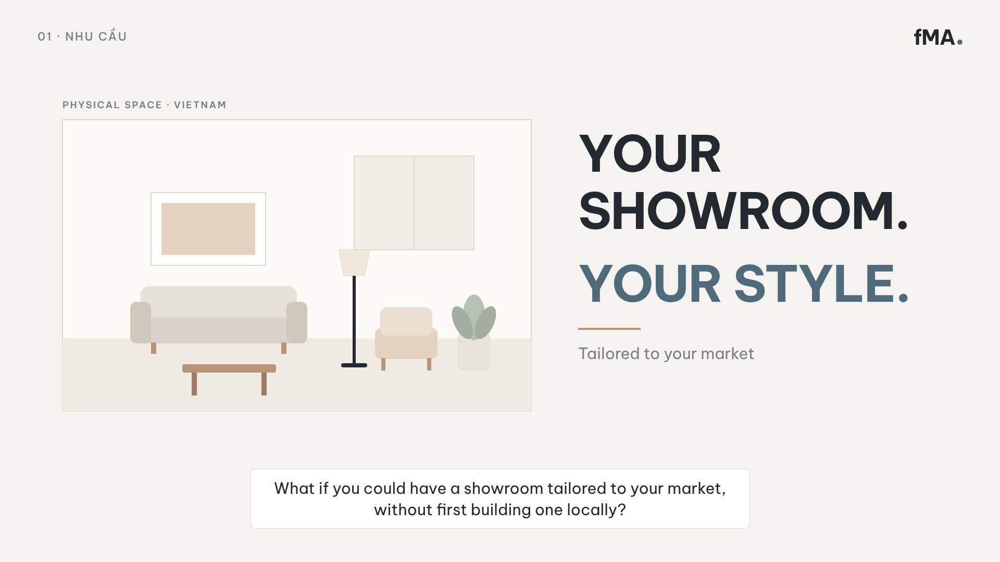
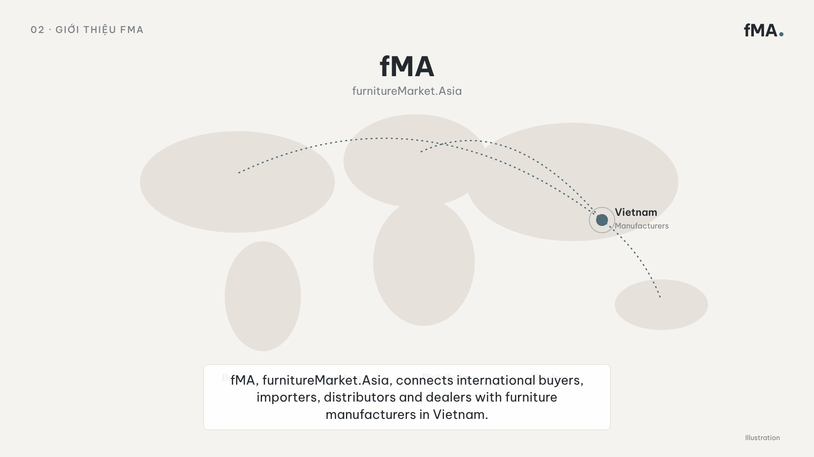
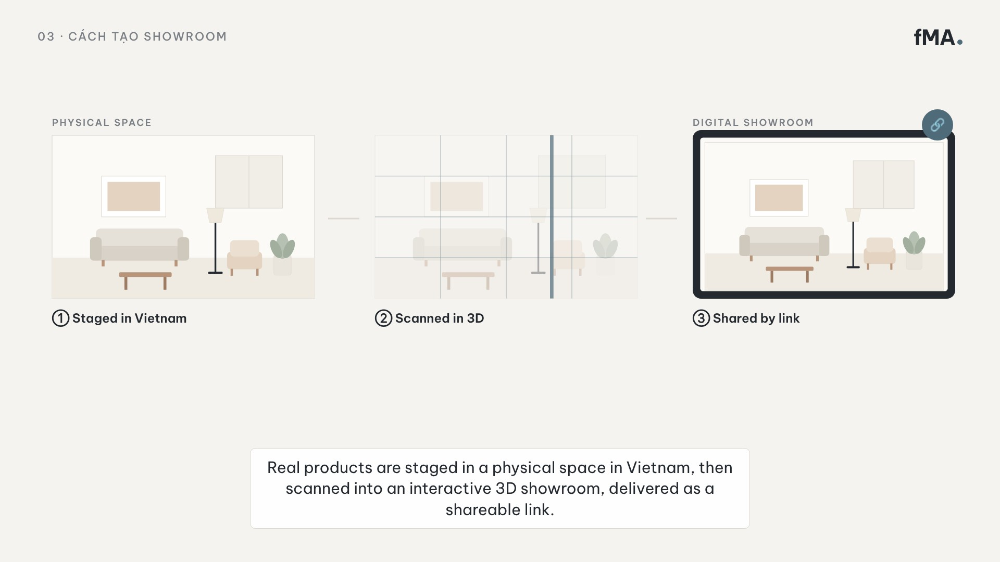
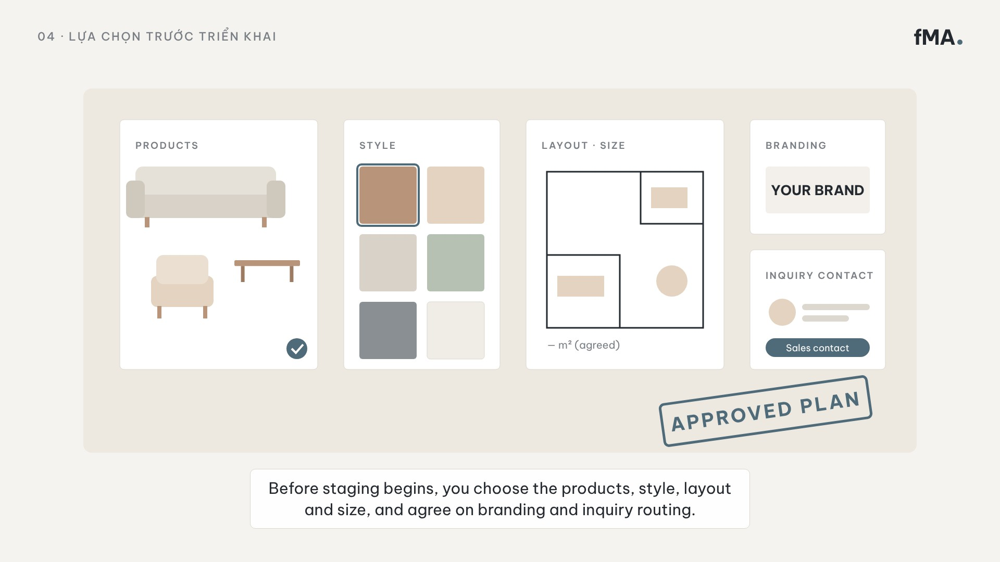
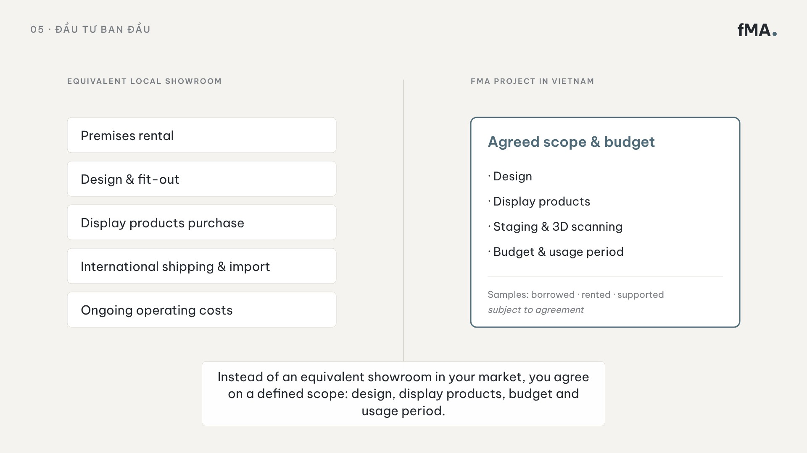
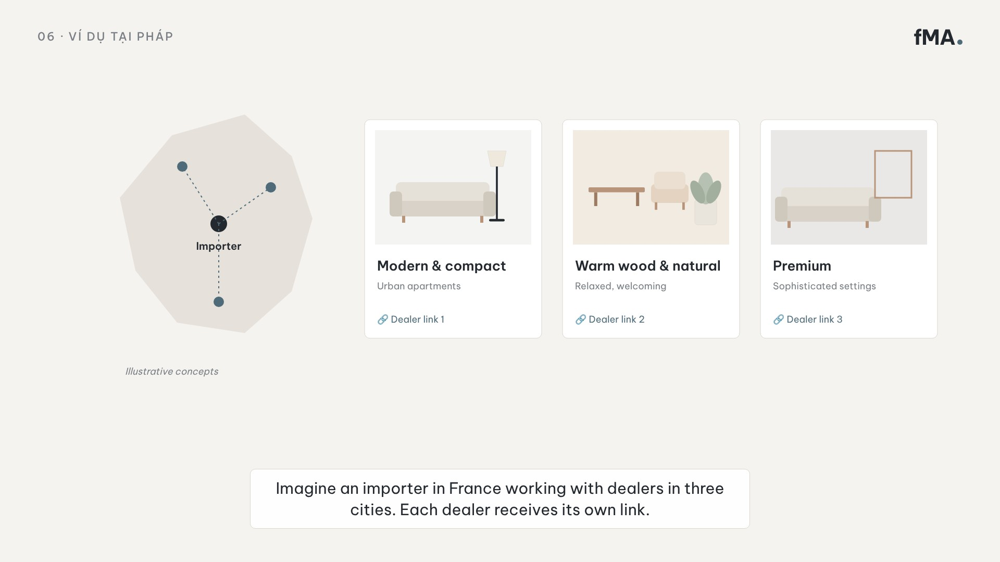
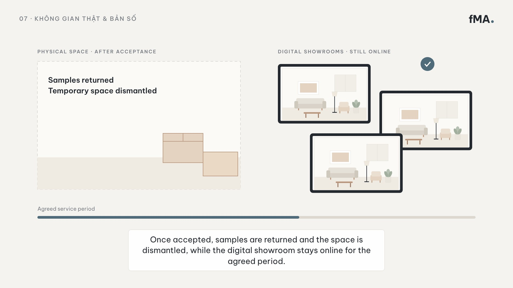
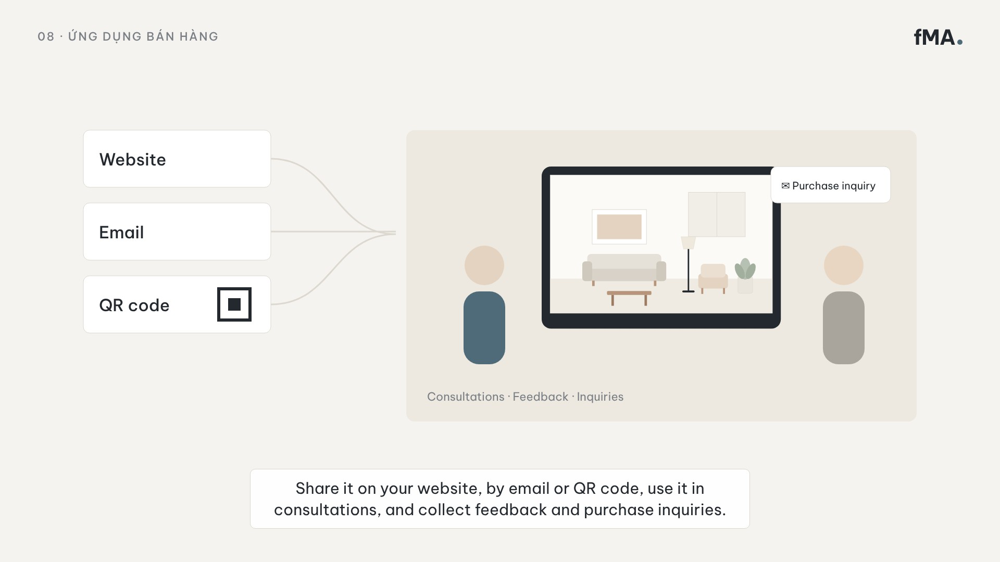
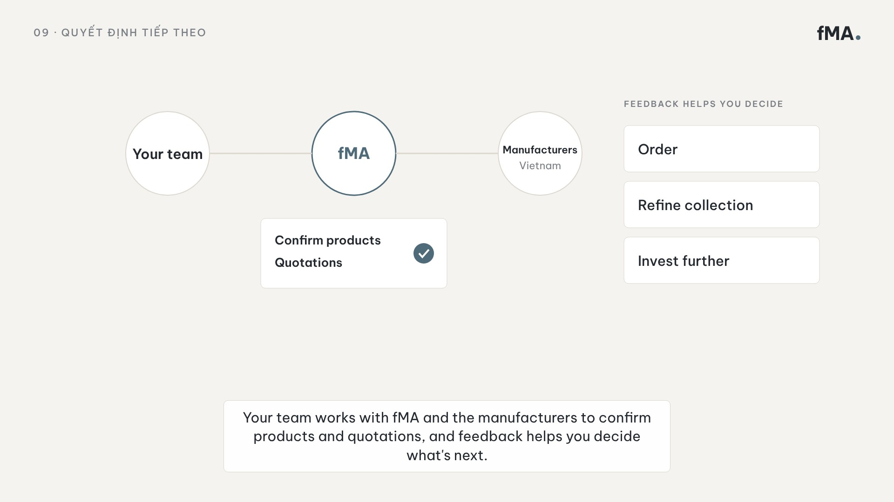
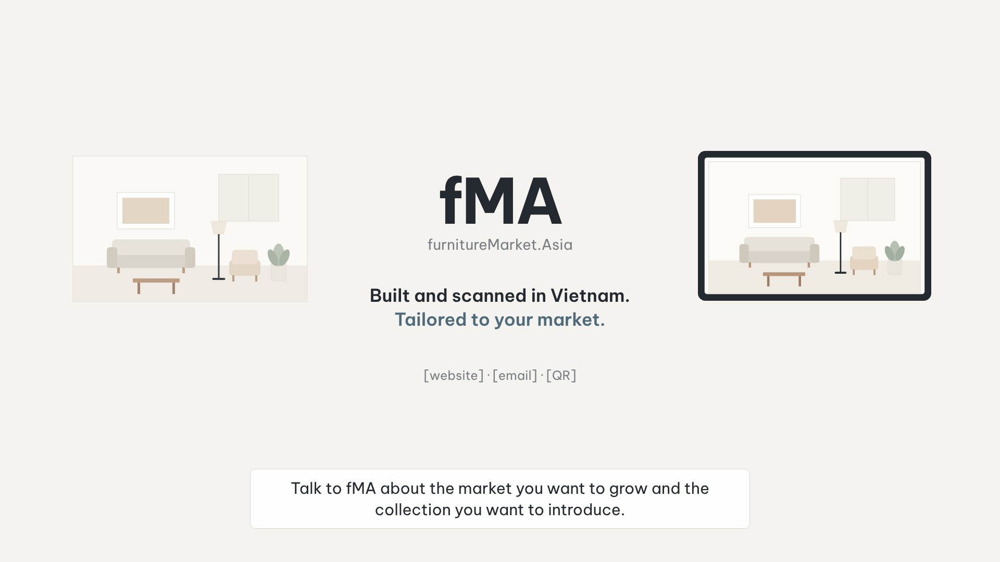

Thời gian: 0:00–0:08
Hình: Phòng mẫu vẽ phẳng có nhãn PHYSICAL SPACE · VIETNAM; tiêu đề YOUR SHOWROOM. YOUR STYLE. Mở bằng nội thất đặt vào phòng, rồi chuyển sang ảnh không gian thật (nếu có).
Đọc: What if you could have a showroom tailored to your market, without first building one locally?

Thời gian: 0:08–0:17
Hình: Bản đồ trung tính, Việt Nam là điểm nhấn màu xanh đá, đường nối chấm ra các khu vực (minh hoạ, không ghim địa điểm). Bốn nhóm đối tác hiện bên dưới.
Đọc: fMA, furnitureMarket.Asia, connects international buyers, importers, distributors and dealers with furniture manufacturers in Vietnam.

Thời gian: 0:17–0:29
Hình: Ba khung nối nhau: dàn dựng → quét 3D (lưới + vệt quét) → thiết bị hiển thị showroom số kèm biểu tượng link. Tách rõ Physical space / Digital showroom.
Đọc: Real products are staged in a physical space in Vietnam. That space is then scanned into an interactive 3D showroom, delivered to you as a shareable link.

Thời gian: 0:29–0:40
Hình: Bàn kế hoạch: thẻ Products, Style (mẫu màu), Layout · Size, Branding, Inquiry contact. Kết bằng dấu APPROVED PLAN.
Đọc: Before staging begins, you choose the products, style, layout and showroom size, and agree on your branding and how customer inquiries reach your team.

Thời gian: 0:40–0:55
Hình: Hai cột so sánh, không gạch bỏ: Equivalent local showroom vs fMA project in Vietnam (Agreed scope & budget, subject to agreement).
Đọc: Instead of investing in an equivalent showroom in your own market, you agree on a defined scope… subject to agreement.

Thời gian: 0:55–1:10
Hình: Bản đồ Pháp giản lược, importer nối 3 ghim. Ba thẻ phong cách, mỗi thẻ một Dealer link. Nhãn Illustrative concepts.
Đọc: Imagine an importer in France working with dealers in three cities… Each dealer receives its own link.

Thời gian: 1:10–1:24
Hình: Trái: không gian trống, thùng mẫu đóng gói. Phải: 3 thiết bị vẫn hiển thị showroom. Thanh Agreed service period bên dưới.
Đọc: Once each digital showroom is accepted, the samples are returned and the temporary space is dismantled, while the digital showroom stays online for the agreed period.

Thời gian: 1:24–1:34
Hình: Ba kênh Website / Email / QR hội tụ vào cảnh tư vấn: nhân viên và khách cùng xem showroom trên màn hình, thẻ Purchase inquiry.
Đọc: Share it on your website, by email or QR code, use it in customer consultations, and collect feedback and purchase inquiries.

Thời gian: 1:34–1:43
Hình: Your team ↔ fMA ↔ Manufacturers, thẻ Confirm products · Quotations. Bên phải ba lựa chọn: Order / Refine collection / Invest further.
Đọc: Your team then works with fMA and the manufacturers to confirm products and quotations. And the feedback helps you decide whether to order, refine the collection or invest further.

Thời gian: 1:43–1:50
Hình: Không gian thật và showroom số hai bên, logo fMA giữa, tagline, ô website/email/QR (chờ xác nhận).
Đọc: Talk to fMA about the market you want to grow and the collection you want to introduce.